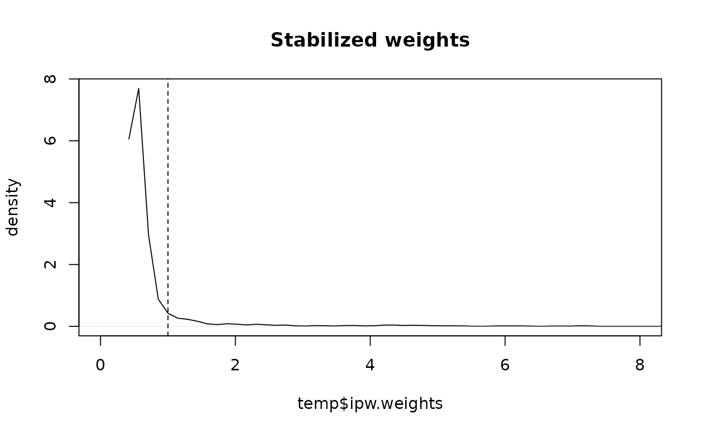

Estimates inverse probability weights to fit marginal structural models in a point treatment situation. Exposure can be binomial, multinomial, ordinal, or continuous (gaussian). Both stabilized and unstabilized weights can be estimated.
Usage
ipwpoint(
exposure,
family,
link = NULL,
numerator = NULL,
denominator,
data,
trunc = NULL,
...
)Arguments
- exposure
Name of the exposure column in
data(unquoted or as a string). Binomial exposure variables should be coded as 0/1.- family
Model family for exposure:
"binomial","multinomial","ordinal", or"gaussian".- link
Link function for binomial (
"logit","probit","cauchit","log","cloglog") or ordinal ("logit","probit","cauchit","cloglog"). Ignored for multinomial and gaussian.- numerator
Formula specifying the right-hand side of the numerator model. If
NULL, unstabilized weights (numerator = 1) are calculated.- denominator
Formula specifying the right-hand side of the denominator model.
- data
Data frame containing exposure and model covariates.
- trunc
Optional truncation percentile between 0 and 0.5 (e.g., 0.01 for 1st/99th percentiles).
- ...
Additional arguments passed to model fitting functions (
glm,multinom,polr).
Value
A list of class "ipwpoint" containing:
- ipw.weights
Numeric vector of inverse probability weights.
- weights.trunc
Numeric vector of truncated weights (if
truncis specified).- call
The original function call.
- num.mod
Numerator model object (if
numeratoris specified).- den.mod
Denominator model object.
References
Cole, S.R. & Hernán, M.A. (2008). Constructing inverse probability weights for marginal structural models. American Journal of Epidemiology, 168(6), 656-664.
Robins, J.M., Hernán, M.A. & Brumback, B.A. (2000). Marginal structural models and causal inference in epidemiology. Epidemiology, 11, 550-560.
Van der Wal W.M. & Geskus R.B. (2011). ipw: An R Package for Inverse Probability Weighting. Journal of Statistical Software, 43(13), 1-23. doi:10.18637/jss.v043.i13 .
Author
Willem M. van der Wal willem@vanderwalresearch.com, Ronald B. Geskus rgeskus@oucru.org, Hung Thai Tran hungtt@oucru.org
Examples
# Simulate data with continuous confounder and outcome, binomial exposure.
# Marginal causal effect of exposure on outcome: 10.
set.seed(16)
n <- 1000
simdat <- data.frame(l = rnorm(n, 10, 5))
a.lin <- simdat$l - 10
pa <- exp(a.lin)/(1 + exp(a.lin))
simdat$a <- rbinom(n, 1, prob = pa)
simdat$y <- 10*simdat$a + 0.5*simdat$l + rnorm(n, -10, 5)
simdat[1:5,]
#> l a y
#> 1 12.382067 1 6.635898
#> 2 9.373100 0 -11.722042
#> 3 15.481081 1 11.501612
#> 4 2.778855 0 -9.464074
#> 5 15.739146 1 15.085261
# Estimate ipw weights
temp <- ipwpoint(
exposure = a,
family = "binomial",
link = "logit",
numerator = ~ 1,
denominator = ~ l,
data = simdat)
summary(temp$ipw.weights)
#> Min. 1st Qu. Median Mean 3rd Qu. Max.
#> 0.4810 0.5127 0.5285 0.9095 0.6318 74.6994
# Plot inverse probability weights
ipwplot(weights = temp$ipw.weights, logscale = FALSE,
main = "Stabilized weights", xlim = c(0, 8))

# Examine numerator and denominator models
summary(temp$num.mod)
#>
#> Call:
#> (function (formula, family = gaussian, data, weights, subset,
#> na.action, start = NULL, etastart, mustart, offset, control = list(...),
#> model = TRUE, method = "glm.fit", x = FALSE, y = TRUE, singular.ok = TRUE,
#> contrasts = NULL, ...)
#> {
#> cal <- match.call()
#> if (is.character(family))
#> family <- get(family, mode = "function", envir = parent.frame())
#> if (is.function(family))
#> family <- family()
#> if (is.null(family$family)) {
#> print(family)
#> stop("'family' not recognized")
#> }
#> if (missing(data))
#> data <- environment(formula)
#> mf <- match.call(expand.dots = FALSE)
#> m <- match(c("formula", "data", "subset", "weights", "na.action",
#> "etastart", "mustart", "offset"), names(mf), 0L)
#> mf <- mf[c(1L, m)]
#> mf$drop.unused.levels <- TRUE
#> mf[[1L]] <- quote(stats::model.frame)
#> mf <- eval(mf, parent.frame())
#> if (identical(method, "model.frame"))
#> return(mf)
#> if (!is.character(method) && !is.function(method))
#> stop("invalid 'method' argument")
#> if (identical(method, "glm.fit"))
#> control <- do.call("glm.control", control)
#> mt <- attr(mf, "terms")
#> Y <- model.response(mf, "any")
#> if (length(dim(Y)) == 1L) {
#> nm <- rownames(Y)
#> dim(Y) <- NULL
#> if (!is.null(nm))
#> names(Y) <- nm
#> }
#> X <- if (!is.empty.model(mt))
#> model.matrix(mt, mf, contrasts)
#> else matrix(, NROW(Y), 0L)
#> weights <- as.vector(model.weights(mf))
#> if (!is.null(weights) && !is.numeric(weights))
#> stop("'weights' must be a numeric vector")
#> if (!is.null(weights) && any(weights < 0))
#> stop("negative weights not allowed")
#> offset <- as.vector(model.offset(mf))
#> if (!is.null(offset)) {
#> if (length(offset) != NROW(Y))
#> stop(gettextf("number of offsets is %d should equal %d (number of observations)",
#> length(offset), NROW(Y)), domain = NA)
#> }
#> mustart <- model.extract(mf, "mustart")
#> etastart <- model.extract(mf, "etastart")
#> fit <- eval(call(if (is.function(method)) "method" else method,
#> x = X, y = Y, weights = weights, start = start, etastart = etastart,
#> mustart = mustart, offset = offset, family = family,
#> control = control, intercept = attr(mt, "intercept") >
#> 0L, singular.ok = singular.ok))
#> if (length(offset) && attr(mt, "intercept") > 0L) {
#> fit2 <- eval(call(if (is.function(method)) "method" else method,
#> x = X[, "(Intercept)", drop = FALSE], y = Y, mustart = fit$fitted.values,
#> weights = weights, offset = offset, family = family,
#> control = control, intercept = TRUE))
#> if (!fit2$converged)
#> warning("fitting to calculate the null deviance did not converge -- increase 'maxit'?")
#> fit$null.deviance <- fit2$deviance
#> }
#> if (model)
#> fit$model <- mf
#> fit$na.action <- attr(mf, "na.action")
#> if (x)
#> fit$x <- X
#> if (!y)
#> fit$y <- NULL
#> structure(c(fit, list(call = cal, formula = formula, terms = mt,
#> data = data, offset = offset, control = control, method = method,
#> contrasts = attr(X, "contrasts"), xlevels = .getXlevels(mt,
#> mf))), class = c(fit$class, c("glm", "lm")))
#> })(formula = a ~ 1, family = binomial(link = "logit"), data = simdat,
#> na.action = function (object, ...)
#> UseMethod("na.fail"))
#>
#> Coefficients:
#> Estimate Std. Error z value Pr(>|z|)
#> (Intercept) 0.07604 0.06329 1.201 0.23
#>
#> (Dispersion parameter for binomial family taken to be 1)
#>
#> Null deviance: 1384.9 on 999 degrees of freedom
#> Residual deviance: 1384.9 on 999 degrees of freedom
#> AIC: 1386.9
#>
#> Number of Fisher Scoring iterations: 3
#>
summary(temp$den.mod)
#>
#> Call:
#> (function (formula, family = gaussian, data, weights, subset,
#> na.action, start = NULL, etastart, mustart, offset, control = list(...),
#> model = TRUE, method = "glm.fit", x = FALSE, y = TRUE, singular.ok = TRUE,
#> contrasts = NULL, ...)
#> {
#> cal <- match.call()
#> if (is.character(family))
#> family <- get(family, mode = "function", envir = parent.frame())
#> if (is.function(family))
#> family <- family()
#> if (is.null(family$family)) {
#> print(family)
#> stop("'family' not recognized")
#> }
#> if (missing(data))
#> data <- environment(formula)
#> mf <- match.call(expand.dots = FALSE)
#> m <- match(c("formula", "data", "subset", "weights", "na.action",
#> "etastart", "mustart", "offset"), names(mf), 0L)
#> mf <- mf[c(1L, m)]
#> mf$drop.unused.levels <- TRUE
#> mf[[1L]] <- quote(stats::model.frame)
#> mf <- eval(mf, parent.frame())
#> if (identical(method, "model.frame"))
#> return(mf)
#> if (!is.character(method) && !is.function(method))
#> stop("invalid 'method' argument")
#> if (identical(method, "glm.fit"))
#> control <- do.call("glm.control", control)
#> mt <- attr(mf, "terms")
#> Y <- model.response(mf, "any")
#> if (length(dim(Y)) == 1L) {
#> nm <- rownames(Y)
#> dim(Y) <- NULL
#> if (!is.null(nm))
#> names(Y) <- nm
#> }
#> X <- if (!is.empty.model(mt))
#> model.matrix(mt, mf, contrasts)
#> else matrix(, NROW(Y), 0L)
#> weights <- as.vector(model.weights(mf))
#> if (!is.null(weights) && !is.numeric(weights))
#> stop("'weights' must be a numeric vector")
#> if (!is.null(weights) && any(weights < 0))
#> stop("negative weights not allowed")
#> offset <- as.vector(model.offset(mf))
#> if (!is.null(offset)) {
#> if (length(offset) != NROW(Y))
#> stop(gettextf("number of offsets is %d should equal %d (number of observations)",
#> length(offset), NROW(Y)), domain = NA)
#> }
#> mustart <- model.extract(mf, "mustart")
#> etastart <- model.extract(mf, "etastart")
#> fit <- eval(call(if (is.function(method)) "method" else method,
#> x = X, y = Y, weights = weights, start = start, etastart = etastart,
#> mustart = mustart, offset = offset, family = family,
#> control = control, intercept = attr(mt, "intercept") >
#> 0L, singular.ok = singular.ok))
#> if (length(offset) && attr(mt, "intercept") > 0L) {
#> fit2 <- eval(call(if (is.function(method)) "method" else method,
#> x = X[, "(Intercept)", drop = FALSE], y = Y, mustart = fit$fitted.values,
#> weights = weights, offset = offset, family = family,
#> control = control, intercept = TRUE))
#> if (!fit2$converged)
#> warning("fitting to calculate the null deviance did not converge -- increase 'maxit'?")
#> fit$null.deviance <- fit2$deviance
#> }
#> if (model)
#> fit$model <- mf
#> fit$na.action <- attr(mf, "na.action")
#> if (x)
#> fit$x <- X
#> if (!y)
#> fit$y <- NULL
#> structure(c(fit, list(call = cal, formula = formula, terms = mt,
#> data = data, offset = offset, control = control, method = method,
#> contrasts = attr(X, "contrasts"), xlevels = .getXlevels(mt,
#> mf))), class = c(fit$class, c("glm", "lm")))
#> })(formula = a ~ l, family = binomial(link = "logit"), data = simdat,
#> na.action = function (object, ...)
#> UseMethod("na.fail"))
#>
#> Coefficients:
#> Estimate Std. Error z value Pr(>|z|)
#> (Intercept) -9.69809 0.66066 -14.68 <2e-16 ***
#> l 0.97272 0.06525 14.91 <2e-16 ***
#> ---
#> Signif. codes: 0 ‘***’ 0.001 ‘**’ 0.01 ‘*’ 0.05 ‘.’ 0.1 ‘ ’ 1
#>
#> (Dispersion parameter for binomial family taken to be 1)
#>
#> Null deviance: 1384.85 on 999 degrees of freedom
#> Residual deviance: 496.86 on 998 degrees of freedom
#> AIC: 500.86
#>
#> Number of Fisher Scoring iterations: 7
#>
# Paste inverse probability weights
simdat$sw <- temp$ipw.weights
# Marginal structural model for the causal effect of a on y
# corrected for confounding by l using inverse probability weighting
if (requireNamespace("survey", quietly = TRUE)) {
library(survey)
msm <- svyglm(y ~ a,
design = svydesign(~1, weights = ~temp$ipw.weights,
data = simdat))
summary(msm)
}
#> Loading required package: grid
#> Loading required package: Matrix
#> Loading required package: survival
#>
#> Attaching package: ‘survey’
#> The following object is masked from ‘package:graphics’:
#>
#> dotchart
#>
#> Call:
#> svyglm(formula = y ~ a, design = svydesign(~1, weights = ~temp$ipw.weights,
#> data = simdat))
#>
#> Survey design:
#> svydesign(~1, weights = ~temp$ipw.weights, data = simdat)
#>
#> Coefficients:
#> Estimate Std. Error t value Pr(>|t|)
#> (Intercept) -4.375 1.142 -3.832 0.000135 ***
#> a 10.647 1.190 8.948 < 2e-16 ***
#> ---
#> Signif. codes: 0 ‘***’ 0.001 ‘**’ 0.01 ‘*’ 0.05 ‘.’ 0.1 ‘ ’ 1
#>
#> (Dispersion parameter for gaussian family taken to be 29.58889)
#>
#> Number of Fisher Scoring iterations: 2
#>